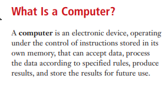
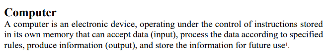
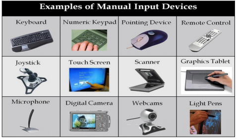
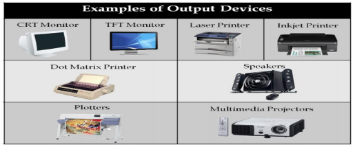
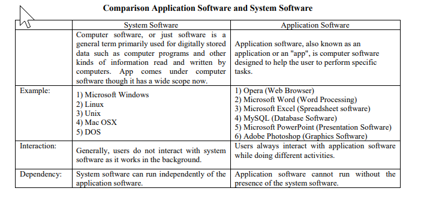

第九週實習 <<
Previous Next >> 網路架構與設定簡介
電腦軟硬體簡介
壹. 電腦本身
電腦是一種電子設備，可以接收指令(=input)加以處理、發送訊息(=output)、存儲訊息。

(這兩本一樣來著www)
電腦的等級分類:
1 超級電腦(supercomputer)
-多用戶 -最快，當然也超貴 -一秒能執行億筆運算
2 大型電腦(mainframe)
-多用戶 -雖然比超級電腦慢，但還是很快(貴) -同時支持幾百至幾千用戶
3 迷你電腦(Minicomputer)
-多用戶 -也不錯，而且主機不用冷氣環境 -同時支持幾十至幾百用戶
4 工作站(Workstation)
-單用戶 - 功能完善的個人電腦
5 微電腦(Microcomputer)
-單用戶 -有顯示器有鍵盤也能儲存資料，筆電就這個等級
貳. 硬體=hardware
電腦可觸碰的有形計算機組件
ex:
1. 輸入設備(input devices)
-提供數據、信號-ex

2. 中央處理器(Central Processing Unit = CPU)
-電腦的腦袋，負責所有計算功能，執行儲存指令
-CPU三部分:
(1) 算術邏輯單元(Arithmetic Logic Unit = ALU)
-主要功能是進行二進位的算術運算和比較，CPU的主要計算元件
(2) 控制單元(Control Unit = CU)
-閱讀執行指令、讀取內存，提供數據給ALU
(3) 暫存器（Register）
-如名，暫時性的儲存資料和指令，讀取速度快，空間不大，算是中繼站
3. 記憶體(Primary＆Secondary)
-Primary
(1)隨機存取記憶體 RAM( = Random Access Memory)
-可暫時保存資料、隨時讀寫，速度很快，但一斷電什麼都沒了
(2)唯讀記憶體 ROM( = Read Only Memory)
-只能讀取資料，將資料燒進線路中，寫入不能更改
-Secondary(CPU不能直接存取)
(1)硬碟 HDD(=Hard Disk Drive)
-可暫快速儲存大量資料，但是是ROM
(2)光碟 CD(=compact disc)
-是ROM
(3)隨身碟 (=flash disk)
-同上
1. 輸入設備(input devices)
-輸出數據、信號-ex

叁. 軟體=software
電腦不可觸碰的無形組件
1系統軟件(System software)
-控制、搜尋、管理個別硬體-ex:程式語言
2應用軟件(Application software)
-完成特定任務、指令，ex:圖像處理器、瀏覽器

第九週實習 <<
Previous Next >> 網路架構與設定簡介